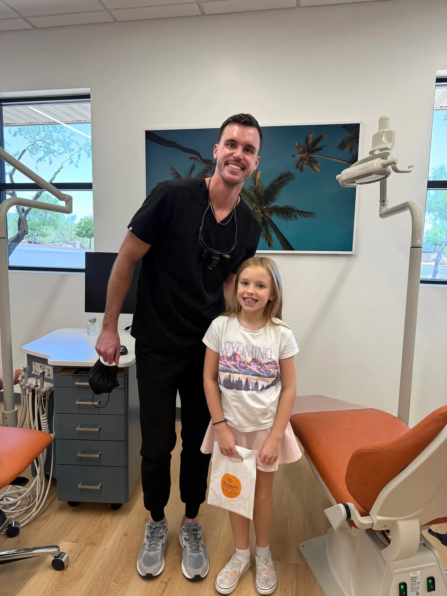
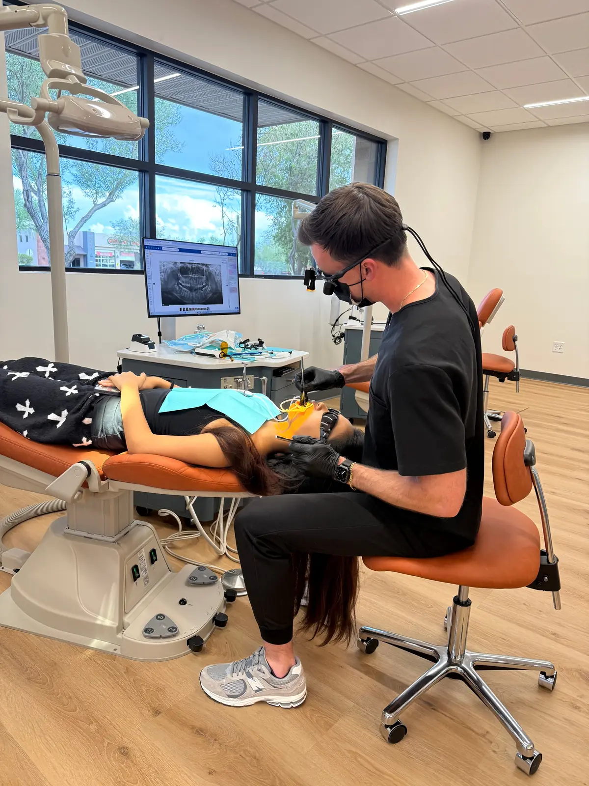
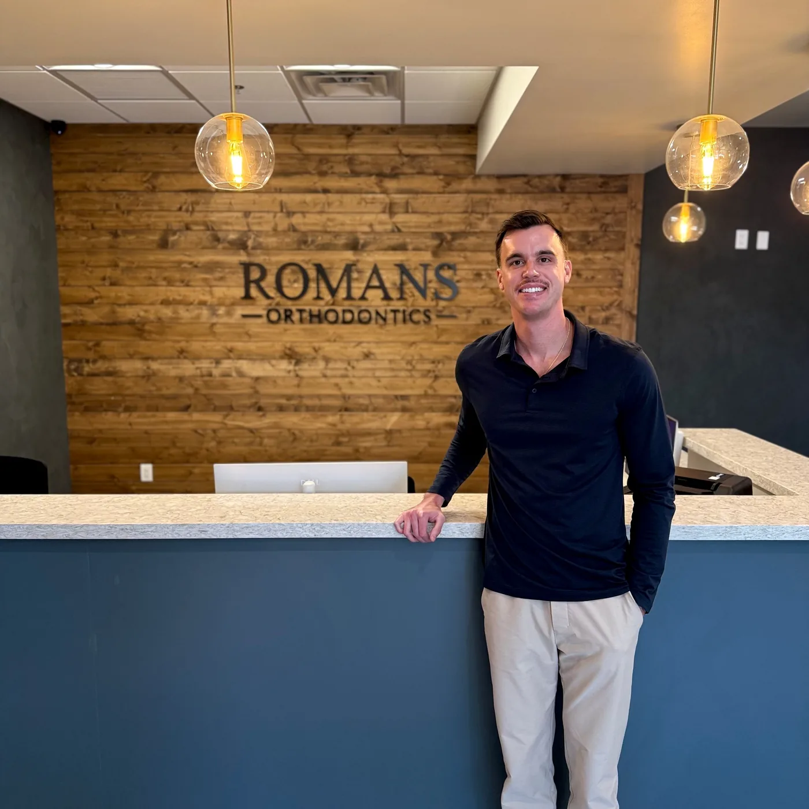

Retainers and replacements in Anthem, Arizona.
Permanent, Hawley and clear retainers, plus replacements when one cracks or goes missing. We scan digitally instead of taking a goopy impression, Dr. Romans checks the fit himself, and you are welcome here even if your braces or aligners were done somewhere else.
- Board-certified orthodontist
- Digital scans, no impressions
- Treated elsewhere? Still welcome
The consult is free and carries no obligation. You can text the same number you would call.

The part of treatment nobody explains.
Teeth keep moving for life, so retention never really ends.
The day the braces come off, or the last aligner comes out, your teeth are straight and they are also loose. Bone and gum tissue need time to settle around the new positions. Even once they have settled, teeth carry on drifting slowly for the rest of your life, which is true of people who never had braces at all.
So a front tooth that has started to turn again is not a failed treatment and it is not your fault for stopping. It is the ordinary thing that happens without a retainer. Whether we treated you or another office did, in another state or twenty years ago, this is a normal appointment to book and there is nothing to feel sheepish about.
If your teeth have already shifted, see braces for adults →
Three kinds of retainer, and a replacement without the goop.
All three are made from a digital scan of your teeth, so nothing has to be poured into a tray and held in your mouth. It also means a replacement can be made from a file rather than starting over.
- Permanent retainers, a thin wire bonded behind the front teeth
- Hawley retainers, the adjustable wire and acrylic design
- Clear retainers, thin, removable and hard to spot
- Digital scans, so a replacement comes from a scan and not a new impression
- Replacements for patients we treated and for patients we did not, with one orthodontist checking the fit before you leave

What to do the day you lose or crack a retainer.
Do not force a cracked retainer back in, and do not wait to see whether it settles down. A week without one is usually fine. A few months without one is how teeth move.
Call or text (623) 320-1222 and say the word retainer, so the front desk knows what to book and how long it takes. Bring the pieces if you still have them. Bring an old retainer even if it no longer seats, because the way it fails tells Dr. Romans how far the teeth have already travelled.
Dr. Nicholas Romans, DMD, MSD.
The person who checks your retainer is the person who owns the practice.
Dr. Romans is board certified by the American Board of Orthodontics, a voluntary examination of his own clinical cases. He earned his MSD and orthodontic specialty training at Saint Louis University, where his graduate research examined Invisalign treatment outcomes, then spent a craniofacial fellowship year at St. Louis Children's Hospital with the Washington University team. He is the only orthodontist here, so a retainer that does not fit right gets looked at by him and not passed along.
- Board certified by the American Board of Orthodontics
- MSD and specialty training, Saint Louis University
- Your appointment in English or Polish

Prefer we call you?
Leave four details and we will call you back about a new retainer or a replacement. Say nothing about your teeth in a web form; that conversation belongs on the phone or in the chair.
Rather just call or text(623) 320-1222[CONFIRM: how quickly the office returns form requests, and the hours call-backs happen]
Request a call back
Six questions we get about retainers.
How long do I have to wear my retainer?
Indefinitely, and that is the honest answer. Wear is heaviest right after treatment and then usually drops to nights only, but the nights-only part does not have an end date, because teeth keep drifting for life. Dr. Romans tells you exactly what your case needs, in plain language, at your appointment.
How much does a replacement retainer cost in Anthem?
It depends on which retainer you need and whether we already have a scan of your teeth, so we will not print a number here that might not be yours. You get the exact figure in writing before anything is made, and the consult itself is free with no obligation. Major PPO plans, FSA and HSA funds and in-house financing are all reviewed at that visit, and how insurance and financing work is laid out in full.
I stopped wearing my retainer years ago. Is it too late?
No. If the teeth have held their position, a new retainer made from a fresh scan is often the whole fix. If they have moved, you have a real choice between holding where they are now and a limited course of treatment to bring them back, and you see both options at the consult before you decide. Braces for adults and clear aligners cover that second road.
Can you replace a retainer you did not make?
Yes, and it is a normal request. People move to Anthem partway through retention, or finished treatment years ago in another state, and there is nothing unusual about starting with us at that point. We scan your teeth as they are today, make the retainer to fit that, and Dr. Romans checks it before you leave. Records from your previous office are welcome but not required.
Permanent or clear: which one should I get?
Neither is better in general; they fail in different ways. A bonded wire behind your front teeth cannot be forgotten or lost, but it needs patient flossing and it can come loose without you noticing. A clear retainer is easy to clean and easy to lose, and it only works on the nights you actually wear it. Plenty of people end up with both, and Dr. Romans will tell you what suits your bite.
How do I clean my retainer?
Brush it gently with a soft toothbrush and cool water every day, and skip the toothpaste, which scratches clear plastic. Never use hot water, boiling water or a dishwasher, because heat warps a clear retainer permanently and there is no fixing it afterwards. Keep it in its case whenever it is out of your mouth, never in a napkin, which is how most retainers end up in the bin.
Keep the smile you already worked for.
Book a free consult in Anthem for a new retainer or a replacement, whether we treated you or another office did. Dr. Romans checks the fit himself.
Book your free consult